The Duplicate Patient Worklist is used to highlight groups of patients that have similar or matching details and enables you to quickly complete merges on mass for one or many of these matching patients, based on a set of configurable criteria. This feature is to automate the existing process of the current workflow of merging patients.
The purpose of this article is to provide guide of how to set up and utilise the Duplicate Patient Worklist.
This article is split into the following sections:
No real patient data has been used for the demonstration of this feature. The data shown in screenshots is purely test data.
Once enabled in your chamber, you will be able to locate the Patient Merging Configuration page in Admin> Configuration > Patient Merging.
Once you are inside of Patient Merging Configuration screen, you will need to tick the Enable duplicate patient worklist box, make sure to click Save in the top corner.
For results to be returned to this worklist page when searching, we need to set up the criteria that we deem to be relevant when searching for duplicate patients.
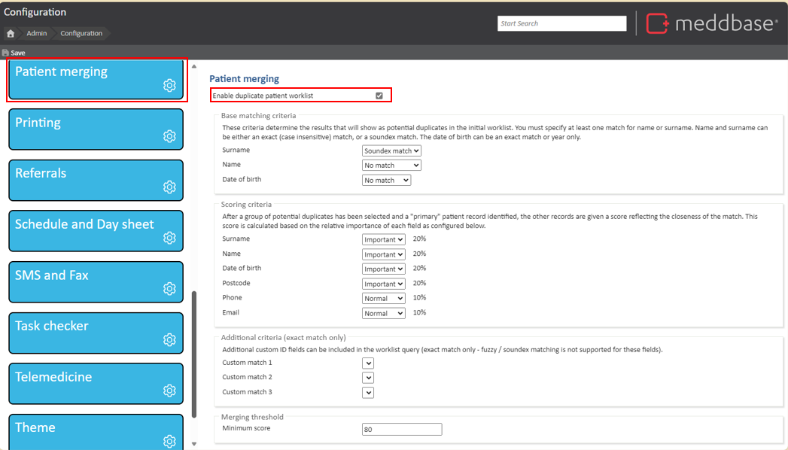
The Base Matching Criteria is what dictates the results shown on the Duplicate Patients Worklist page and how we create groups of patients based on the similarity of 3 main patient fields.
These criteria determine the results that will show as potential duplicates in the initial Worklist. You must specify at least one match for name or surname. Name and surname can be either an exact (case insensitive) match, or a Soundex match. The date of birth can be an exact match or year only.
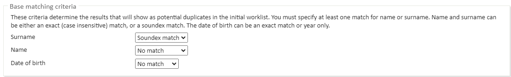
Name and Surname
Duplicate patients will often have either the same or a similar name for their different records. With these options, we can choose if we're looking for an exact or Soundex match for one or both of these name fields, or no match is necessary.
Date of birth
For DOB we can match patients on the exact date or just a matching year. We can also choose to have no match for the date, similar to the name fields.
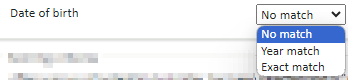
While we can have No match for all of the base criteria options, it is a requirement to have at least 1 of these fields set to some method of matching for it to function. As a result you are unable to save the configuration settings if all of the options are set to No match.
After we've found a group of patients that match based on our Base Criteria, there is a scoring system applied to indicate how close these patients' details match to the main patient record based on additional fields.
This scoring can be seen by selecting a group of patients from the Duplicate Patients Worklist when assessing a group of patients, we first pick a primary patient. Then, we assign a score to each patient in the group based on how many details align with those of the primary patient.
When setting the Scoring Criteria, you will need to assign a weighting against 6 fields, of which there are 3 levels of importance for each field. Fields marked important, have twice the weight of fields marked as Normal.
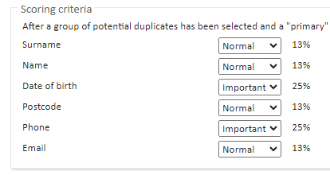
Scoring breakdown
When hovering over a patient score field, a score breakdown will appear to inform you which fields are matching with the primary patient and how they've accumulated the given score.
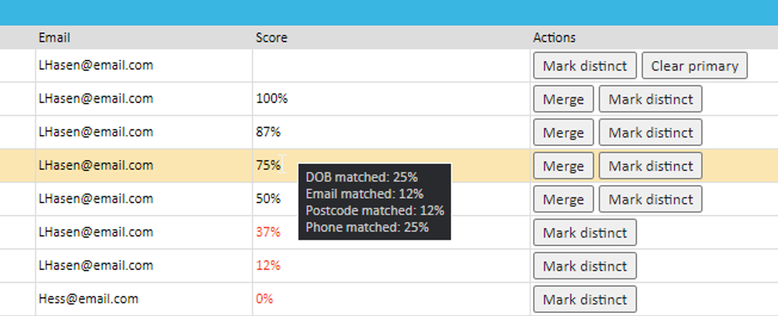
Note: When calculating scores, names are only considered exact matches to the primary patient. Matching based solely on Soundex codes does not contribute to scores displayed on this page.
Additional custom ID fields can be included in the worklist query, these are external identifiers that have been set up in Admin > Common Catalogues > External Ids. These custom IDs can only be an exact match only.
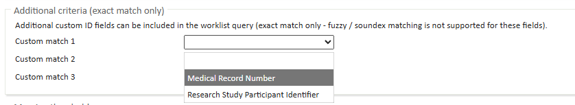
Here you can set the minimum score required to allow a patient to be merged into the primary record.
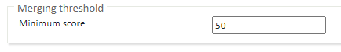
If the score assigned to the patient does not meet the threshold it will disable the individual merge option from appearing for that specific patient, and also not include them when doing a bulk merge from this screen.
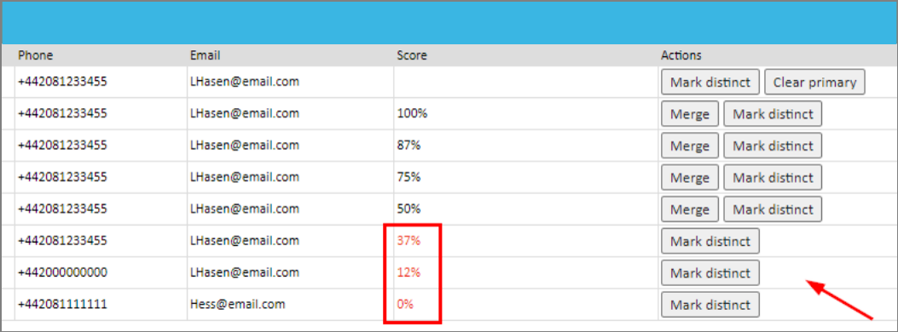
To access the Duplicate Patient Worklist, you will need to add the tile to your start page layout. For support with editing Start Page Layouts, please refer to this article Changing Start Page Layouts.
In the Duplicate Patient Worklist window, you are presented with a range of sections. Potential Duplicates will not be shown until you click Search.
On the top part of this page, you can view your Base criteria, Weighting, and Additional fields. This is a reminder of what you have set up in Configuration > Patient Merging.
By default any patients that have been declared as distinct (not a duplicate) or are currently in progress of being merged will not appear in the list of results, but there are filter options that can be enabled to include these records in the view.
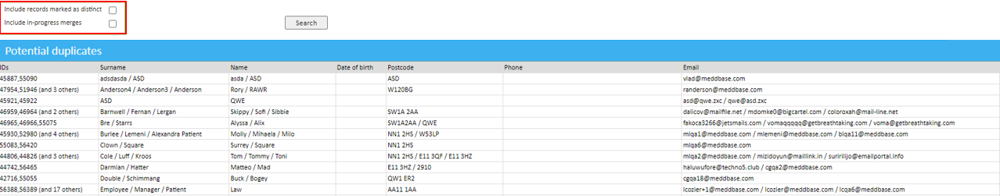
Click Search to return the list of potential duplicates. You will now see rows of patients who are a match based on your conditions. Each row identifies a group of patients that have been matched due to the base criteria.
By selecting a row with a group of patients, a detailed view of the patient group will be displayed. This new page is where you can select valid duplicates and initiate the merge process.
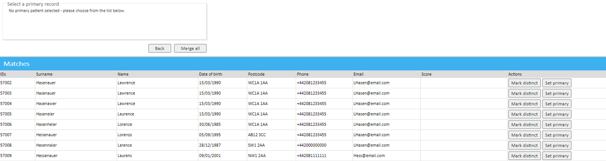
Based on the status of a patient in this view, different action buttons are available to either add/remove a patient from the bulk merge process, or initiate an individual merge of that patient into the main record.
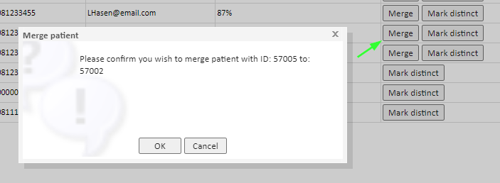
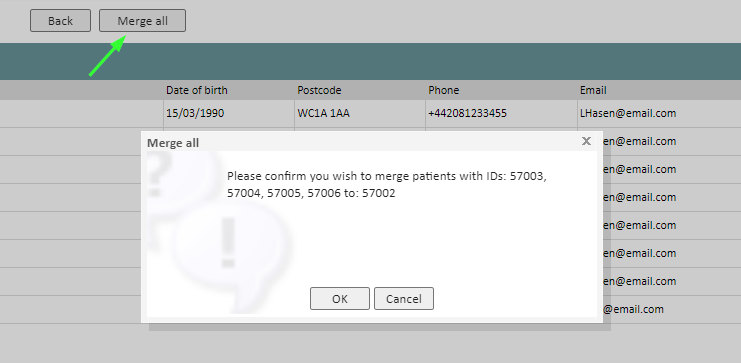
Once you confirm the merge by clicking OK, the merge process will begin and the records which have been merged with the Primary record, will state "Merge in progress" in the Score column.